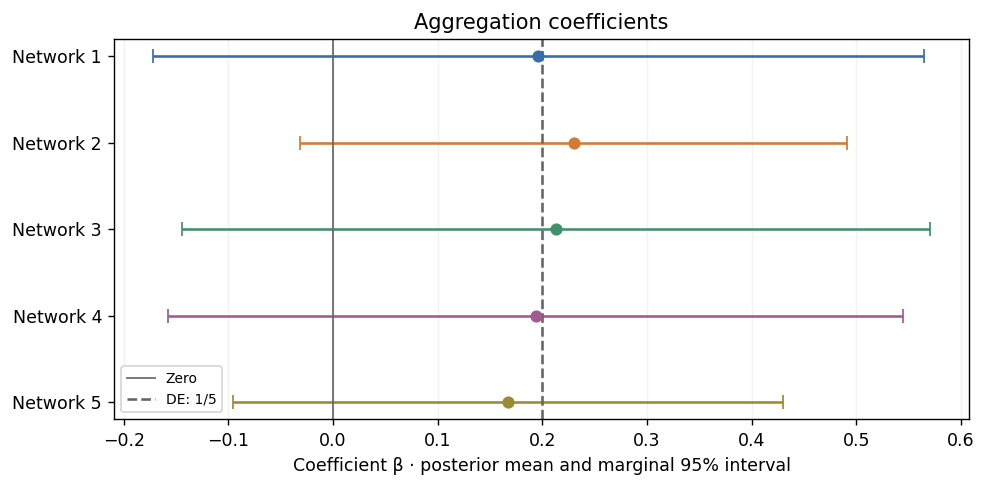
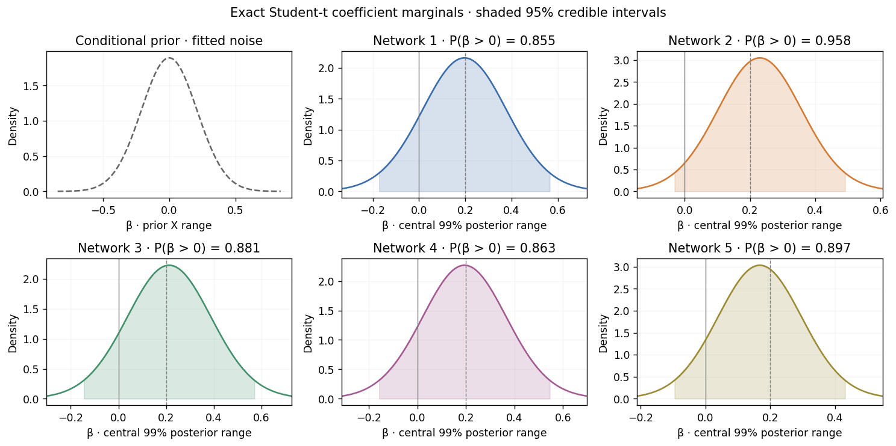
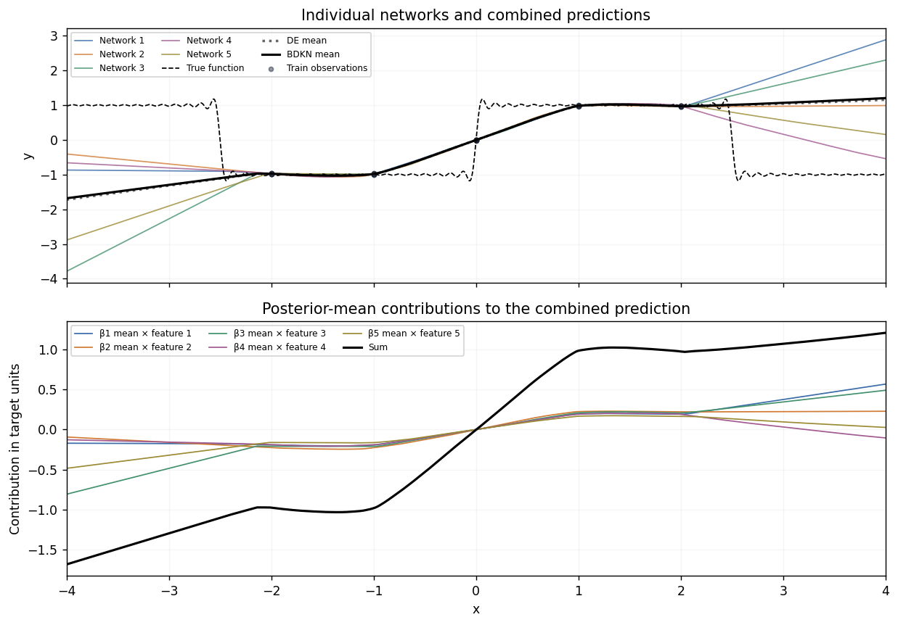
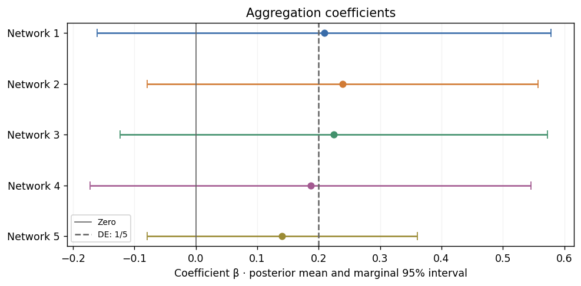
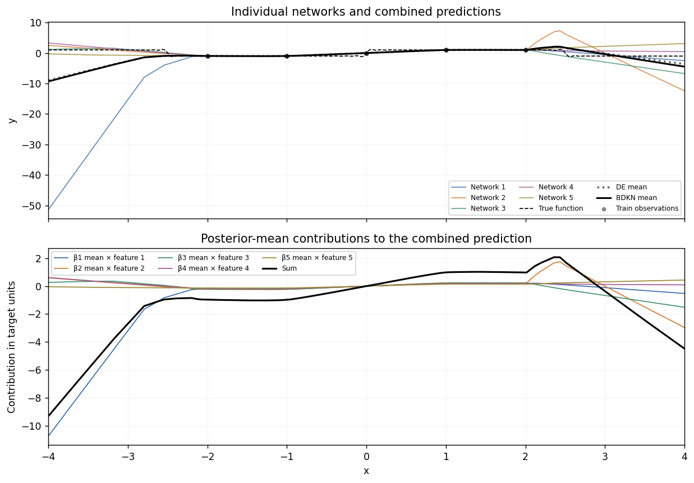
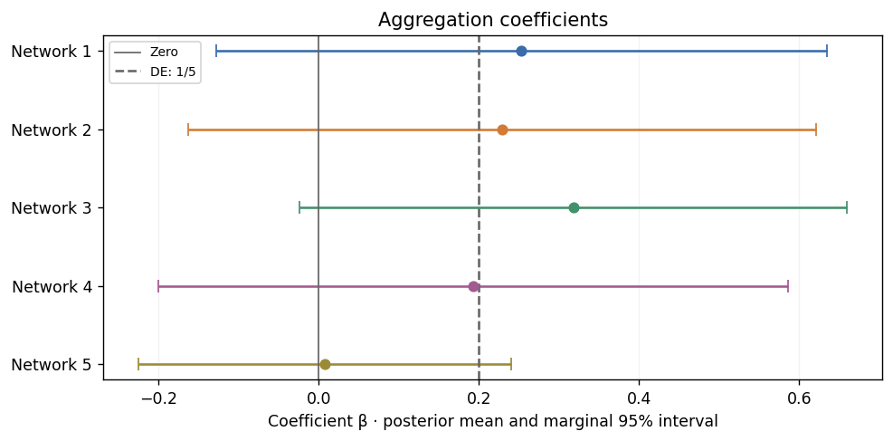
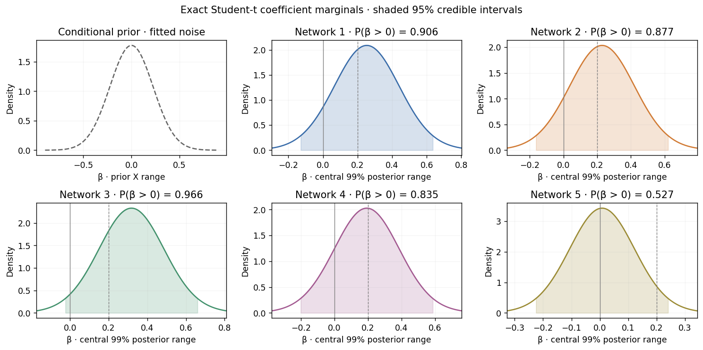
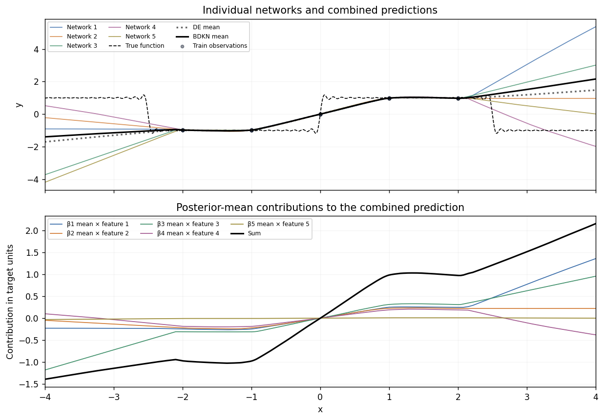

Regression comparison
Download resultsAggregation weights
Coefficients can be negative and need not sum to one. Intervals describe coefficient uncertainty; the dashed reference is DE’s fixed 1/H weight.
BDKN


Each density panel uses its own X range for readability; coefficient intervals above share a common axis. Prior reference conditions on fitted noise. Contribution shares use held-out inputs; test targets are used only for scoring.
| Network | β mean | 95% low | 95% high | P(β > 0) | Contribution share | Test RMSE | Test NLL |
|---|---|---|---|---|---|---|---|
| 1 | 0.20499 | -0.16142 | 0.57139 | 0.86674 | 0.20629 | 1.24833 | 58883.42623 |
| 2 | 0.20321 | -0.04378 | 0.45019 | 0.94766 | 0.19829 | 1.19777 | 13842.83477 |
| 3 | 0.20250 | -0.16348 | 0.56849 | 0.86413 | 0.20069 | 1.22938 | 56464.58887 |
| 4 | 0.19702 | -0.15856 | 0.55260 | 0.86446 | 0.20055 | 1.25845 | 42876.21222 |
| 5 | 0.19261 | -0.07921 | 0.46443 | 0.91957 | 0.19419 | 1.24253 | 34739.66116 |
Functional repulsion · BDKN



Each density panel uses its own X range for readability; coefficient intervals above share a common axis. Prior reference conditions on fitted noise. Contribution shares use held-out inputs; test targets are used only for scoring.
| Network | β mean | 95% low | 95% high | P(β > 0) | Contribution share | Test RMSE | Test NLL |
|---|---|---|---|---|---|---|---|
| 1 | 0.19632 | -0.17191 | 0.56455 | 0.85531 | 0.21981 | 1.64411 | 280621.76812 |
| 2 | 0.22998 | -0.03128 | 0.49125 | 0.95842 | 0.18984 | 1.14421 | 18345.49415 |
| 3 | 0.21281 | -0.14476 | 0.57039 | 0.88122 | 0.28945 | 1.99828 | 547871.38800 |
| 4 | 0.19373 | -0.15761 | 0.54507 | 0.86332 | 0.13386 | 0.90918 | 9688.52704 |
| 5 | 0.16764 | -0.09512 | 0.43040 | 0.89702 | 0.16703 | 1.49424 | 93955.93368 |
Weight repulsion · BDKN



Each density panel uses its own X range for readability; coefficient intervals above share a common axis. Prior reference conditions on fitted noise. Contribution shares use held-out inputs; test targets are used only for scoring.
| Network | β mean | 95% low | 95% high | P(β > 0) | Contribution share | Test RMSE | Test NLL |
|---|---|---|---|---|---|---|---|
| 1 | 0.20907 | -0.16042 | 0.57857 | 0.86942 | 0.48743 | 12.36690 | 36418551.58139 |
| 2 | 0.23902 | -0.07952 | 0.55756 | 0.93097 | 0.21542 | 2.78265 | 387217.79208 |
| 3 | 0.22461 | -0.12301 | 0.57224 | 0.89985 | 0.14808 | 1.53418 | 552833.12629 |
| 4 | 0.18702 | -0.17173 | 0.54577 | 0.84995 | 0.07547 | 0.91465 | 50124.24145 |
| 5 | 0.14059 | -0.07963 | 0.36080 | 0.89717 | 0.07360 | 1.70655 | 440174.56349 |
First-order repulsion · BDKN



Each density panel uses its own X range for readability; coefficient intervals above share a common axis. Prior reference conditions on fitted noise. Contribution shares use held-out inputs; test targets are used only for scoring.
| Network | β mean | 95% low | 95% high | P(β > 0) | Contribution share | Test RMSE | Test NLL |
|---|---|---|---|---|---|---|---|
| 1 | 0.25323 | -0.12854 | 0.63500 | 0.90560 | 0.31324 | 2.26804 | 1046988.71505 |
| 2 | 0.22898 | -0.16259 | 0.62055 | 0.87713 | 0.15857 | 1.11224 | 25404.56762 |
| 3 | 0.31787 | -0.02401 | 0.65974 | 0.96615 | 0.40061 | 2.12389 | 688513.87633 |
| 4 | 0.19263 | -0.20032 | 0.58558 | 0.83523 | 0.11996 | 0.59375 | 2282.81303 |
| 5 | 0.00780 | -0.22473 | 0.24034 | 0.52673 | 0.00761 | 1.79234 | 242197.01640 |